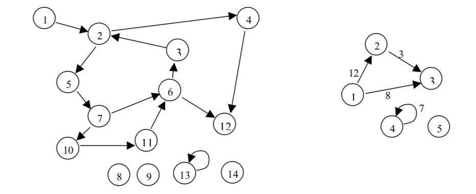
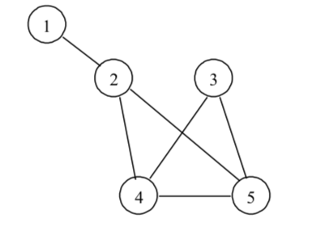

5. Представяне на граф. Обхождане на граф
План:
Задачи за домашно 3 и 4
Дефиниции
Предсавяне
Обхождане
Задачи за домашно 5 и 6
Дефиниции [5.1, стр. 247]

* Връх, възел (vertex, node), дъга, ребро (arc, edge), n
върха, m ребра
* Ориентиран и неориентиран граф, претеглен граф,
компоненти на свързаност
* Път в граф, напр. 10-11-6-3-2
*Цикъл, напр. 5-7-6-3-2-5
* Свързан граф,
* Мултиграф (повторение на ребра)
* Предшественици и наследници,
инцидентност, съседност, степен на връх
* Пълен граф, двуделен граф, подграф
* Дърво (неориентиран
свързан граф без цикли), кореново дърво, покриващо дърво
Представяне [5.2]

* Списък на ребрата [5.2.1]
Пример:
(1,2), (2,4), (2, 5), (3, 4), (3, 5), (4, 5)
памет O(m), съседни ребра O(m) или O(log
m)
* Матрица на съседство (достижимост) [5.2.2]
Пример:
1 2 3 4 5
1 0 1 0 0 0
2 1 0 0 1 1
3 0 0 0 1 1
4 0 1 1 0 1
5 0 1 1 1 0
памет O(n2), съществуване на ребро между
два върха O(1), наследници на връх O(n)
* Списък на наследниците [5.2.3]
Пример:
1 -> 2
2 -> 1, 4, 5
3 -> 4, 5
4 -> 2, 3, 5
5 -> 2, 3, 4
памет O(m), наследници на връх O(1), ребро
между два върха O(бр.насл.) или O(log бр.насл.)
* Матрица на инцидентност връх - дъга [5.2.4]
Пример:
1 2 3 4
5
(1,2) 1 1 0 0 0
(2,4) 0 1 0 1 0
(2,5) 0 1 0 0 1
(3,4) 0 0 1 1 0
(3,5) 0 0 1 0 1
(4,5) 0 0 0 1 1
памет O(m.n), ребро между два
върха O(m)
Обхождане [5.3]

*Обхождане в ширина (BFS)
[5.3.1] лекция
в MIT
Пример:
1; 2; 3,4,5; 7,6,12; 10; 11
*Обхождане в дълбочина (DFS)
[5.3.2]
Пример:
1,2,4,12,6,7,5; 10,11; 3
1,2,3,4,10,11;6,12,4; 3
*Най-кратък път между два върха по брой на върховете [5.4.1]
Пример:
1, 2, 4, 12, 6 (път)
1 2, 3, 6 (най-кратък път)
*Проверка за цикличност [5.4.1]
*Намиране на всички прости пътища между два върха [5.4.1]
Пример:
1, 2, 4, 12, 6
1 2, 3, 6
1, 2, 5, 7, 6